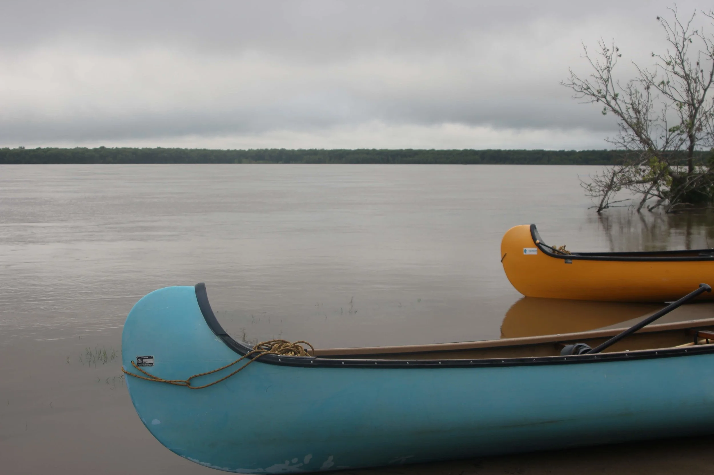

"You must go on adventures to find out where you truly belong." - Sue Fitzmaurice
It rained on Day 4. It rained a lot. There are almost no pictures from this day because it was too wet.
.JPG)
The rain began at 4 am and rained all morning. Around 6 am it was light enough that we quickly packed up the tents before it rained more. Then we spent the morning paddling in the rain. We went through a spectacular back channel but no one really enjoyed it because we were wet and cold.
We got to camp and collected firewood in the rain. We set up a rain fly and unloaded the boats in the rain.
Then it cleared long enough for us to get a fire started and set up our tents. Then it rained as we cooked dinner.
After dinner, the clouds parted and the sun came out for a few hours which was enough time for everything to dry out and for us to explore the island a bit. After a day of being wet we were feeling pretty blessed to have a dry tent and a fire going!

On our last night together around the fire, it drizzled off and on but we stuck together for a long time talking about the trip and what it meant to us. It was bittersweet. We were all excited to go home but also sad to leave. We had learned so much from each other and shared so much of ourselves.
The sky cleared for just a few minutes revealing a starry sky and we were as close to our truest selves as we could be.